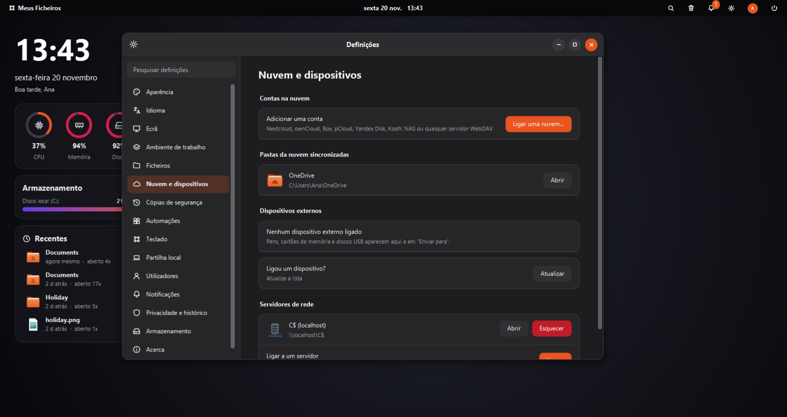

Nuvem, dispositivos e rede
Abra Definições › Nuvem e dispositivos para ver tudo o que está ligado ao FileExp.

Pastas sincronizadas#
O FileExp encontra as pastas dos programas de sincronização instalados no seu computador: OneDrive, Google Drive, Dropbox, iCloud, MEGA, Nextcloud, ownCloud, pCloud, Box e Yandex. Aparecem na Visão geral e em Enviar para › Nuvem. É o próprio programa de sincronização que envia os ficheiros para a internet.
Contas WebDAV#
Muitos serviços e NAS falam WebDAV: Nextcloud, ownCloud, Box, pCloud, Yandex Disk, Koofr, Synology/QNAP e outros.
- Definições › Nuvem e dispositivos › Ligar uma nuvem….
- Introduza o endereço do servidor, o utilizador e a palavra-passe (use uma palavra-passe de aplicação quando o serviço a oferecer).
- A conta aparece em Meus Ficheiros. Pode navegar, abrir, transferir, carregar, criar pastas, eliminar e copiar uma ligação.
As palavras-passe são guardadas cifradas no seu computador. Sem internet, o FileExp mostra uma mensagem em vez de bloquear.
Dispositivos externos#
As pens USB, os cartões de memória e os discos externos aparecem em Este PC / Computador com o seu nome (por exemplo "USB DATA (E:)") e uma barra de utilização, e em Enviar para › Dispositivos externos. Uma tarefa de cópia de segurança pode começar automaticamente quando o seu disco é ligado.
Servidores de rede (SMB)#
Ligar a um servidor… (em Definições › Nuvem e dispositivos, no menu Novo de Meus Ficheiros ou na secção Rede da Visão geral) aceita:
text\\server\folder
//server/folder
smb://user@server/folder
A ligação é feita pelo seu sistema (Windows: caminhos UNC e net use; Linux: gio mount; macOS: mount volume). O FileExp guarda o endereço, nunca a palavra-passe. Os servidores guardados aparecem em Rede na Visão geral.